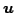
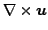

In this work we investigate the numerical solution for two-dimensional
Maxwell's equations on graded meshes. The approach is based on the Hodge
decomposition. The solution
 of Maxwell's equations is
approximated by solving standard second order elliptic problems. The
quasi-optimal error estimates for both
and
 in the  norm are obtained on graded meshes.
We prove the uniform convergence of the
norm are obtained on graded meshes.
We prove the uniform convergence of the  -cycle and full multigrid
algorithms for the resulting discrete problem. The performance of these
methods is illustrated by numerical results.
-cycle and full multigrid
algorithms for the resulting discrete problem. The performance of these
methods is illustrated by numerical results.